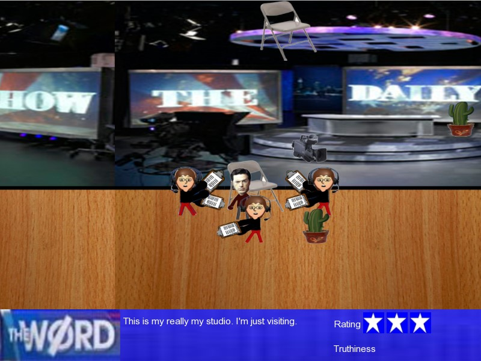

Colbert's Conquest (2008)

Authors
Warren Bame, Dan Demp, Chris Fosdick
Description
• Colbert's Conquest
• Warren Bame, Dan Demp, Chris Fosdick
• Side Scrolling Game
• As Stephen Colbert, you must take down your rival John Stewart to improve your overall ratings with the American public.
• Project "ingredients list"
• Uses the Zenipex library
Downloads
Compatibility notes.
Launches on Windows 10. The audio (if there is any) does not work and the game runs in fast-motion on modern hardware.
This download is a fixed version with OpenAL-Soft.